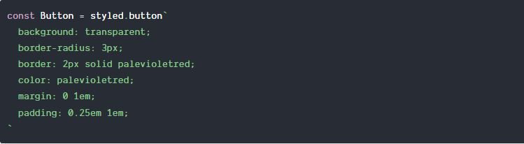

Styled Components
Getting Started: Installation
To download styled-components run:

That's all you need to do, you are now ready to use it in your app!
Your first styled component
Let's say you want to create a simple and reusable <button/> component that you can use throughout your application. There should be a normal version and a big and primary version for the important buttons. This is what it should look like when rendered: (this is a live example, click on them!)


First, let's import styled-components and create a styled.button:

This Button variable here is now a React component that you can use like any other React component! This unusual backtick syntax is a new JavaScript feature called a tagged template literal.
You know how you can call functions with parenthesis? (myFunc()) Well, now you can also call functions with backticks! (learn more about tagged template literals)
If you render our lovely component now (just like any other component: <button/> this is what you get:
It renders a button! That's not a very nice button though we can do better than this, let's give it a bit of styling and tickle out the hidden beauty within!
As you can see, styled-components lets you write actual CSS in your JavaScript. This means you can use all the features of CSS you use and love, including (but by far not limited to) media queries, all pseudo-selectors, nesting, etc.
The last step is that we need to define what a primary button looks like. To do that we also import { css } from styled-components and interpolate a function into our template literal, which gets passed the props of our component:

Here we're saying that when the primary property is set we want to add some more css to our component, in this case change the background and color.
That's all, we're done! Take a look at our finished component: